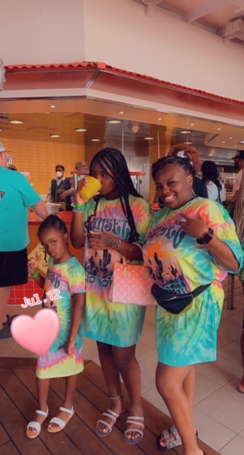

Once upon a time, not long ago I was born in August of 1986 in St. Louis, MO. I grew up in Jennings, MO and I graduated top 5 percent of my class from Jennings Senior High. I went to college at the University of Missouri - Columbia known as Mizzou! I graduated with a bachelor's degree in psychology. After completing college, I had a very hard time finding a job using my degree. I found out the hard way when you have a bachelor's in psychology most employers want you to have experience in psychology. Still till this day I have not worked one single job using my degree, but I have had many jobs in my professional career.
Professional Career
Within my professional career, I have had many jobs. I have worked at places like:
- Banks
- Restaurants
- Department Stores
- Retail Stores
- Staffing Agency
- Mostly Clerical Jobs
Things I like to do for fun:
- Spending time with my kids
- Spending time with friends
- Going out for drinks/eat
- Planning Events/Vacations
- Streaming Series on Netflix
- Going on road trips
- Taking trips
Favorite Trip
In July of 2022, I took a family trip to Cozumel, Mexico with 23 of my family members, we drove to Mobile, Alamba port to get on a cruise ship to Mexico. We were on the ship for 5 days, the 1st stop was Costa Maya, Mexico and the next stop was Cozumel, Mexico, we had so much fun learning a new culture and trying new foods we had never heard of before. I took my children with us and the experience of learning & trying new things with them was priceless. When I was younger, we were not able to afford to go on trips out of the country so to be able to afford that experience is nothing I never thought I would ever do. We are also planning on going to the Bahamas in 2024, after I complete the Web Development class. We will go in celebration of completion of this course.
'Mayan Ruins'

'Tyaa and Tyra'
'Me, Tyaa and Tyra'
Designing Web pages and computer programming has always been a dream of mine but coming from where I came from, I did not think it was achievable. As a computer programmer(coder) I would like to develop free educational websites for underprivileged children who cannot afford tutors and are struggling in school. I would also like to design websites for influencers, reality stars and entrepreneurs with upcoming businesses. My short-term goal is to work in IT at my current job, Express Scripts.